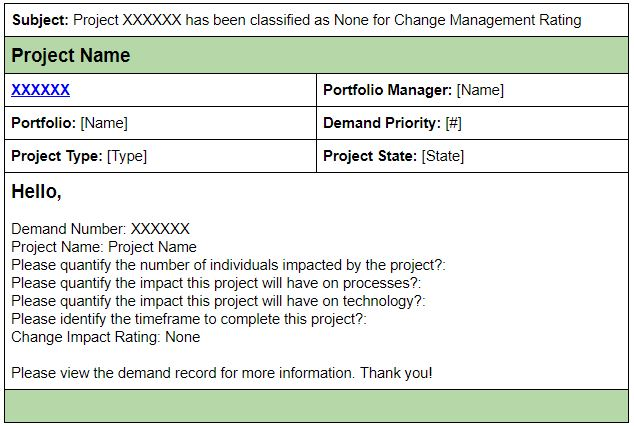
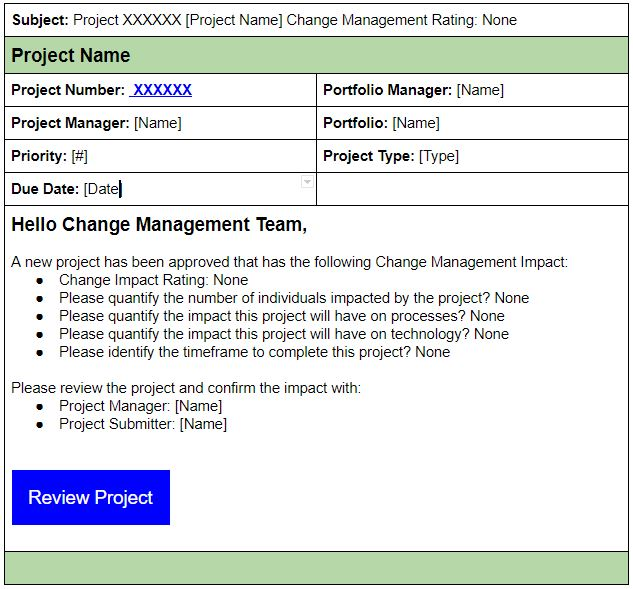

Case Study: Project Management System Notifications
Problem
Users find the system notification emails confusing so opt to contact support rather than work through issues on their own.
Goal
Reduce the amount of trouble tickets, enable users to complete tasks on their own.
Background
The Project Management tracking system is used to submit and approve projects that require multiple resources to approve and verify information. It is used within several different functional groups to coordinate and secure resources before in-depth project planning. It is used mostly for keeping track of project details, and for auditing purposes.
Initial Brief
I was contacted by the Lead for the Project Management IT Support Team to assist with redesigning their emails. The team was hoping that I would provide a facelift that would organize the information in a more easy to understand way to assist the end users with completing their tasks.
After receiving examples of the various system emails sent out to users it was apparent that more than a facelift was required. I set up a meeting with the tech team to more deeply understand the issues that their users were facing.
Revised Pain Points
- Users are unsure who is required to take action on a task
- Emails are getting lost in user’s inbox
- Too many system emails
- Have to open each email to see if it is relevant
- User unsure of action to take
- User doesn’t know where to go to take action
- Support team inundated with support tickets
- Actions are overdue or not completed
Process
I requested a workflow map and the examples of all the emails that were sent out at each branch and began to organize and categorize the emails. Overall, there were three categories of emails, Action Required, Progress Updates, and Courtesy Copies.
The main requirement was that the static content should be as generic as possible since individual project details were so varied. I set up a meeting with the tech team to discuss the capabilities and limitations of the system notifications and realized there were opportunities to leverage dynamic content. After getting a list of required content from the Lead I set to work on updating the emails.
Solutions
- Move assigned person to the To field and all others to the CC field.
- Rewrite subject lines with keywords to give overview of content, such as Action Required, Progress Update, etc.
- Reorganize content into more logical groupings
- Enable hyperlinks for specific fields
- Have a dynamic greeting pulling name from system to make it more apparent who has to do something, for example Hello Jane Doe.
- Rewrite the email content to be more clear about the purpose of the email
- Insert large buttons with descriptive text to take user to appropriate page in the system, for example Review Project Requirements
- Inject due dates from the system and insert into email.
Before and After
Before
- Awkward subject line
- Inconsistent terminology, Project vs Demand
- No indication of who the notification is for
- Questions look like they need to be answered
- Action required not clear
- No direct link to page
After
- Added Project name to subject line
- Reworded Subject line
- Reorganized data
- Added relevant data
- Addressed to team that is required to complete action
- Removed irrelevant information
- Provided questions and their answers for review
- Added specific action required
- Added contacts to confer with
- Added button to software form
Results
When the new notifications were ready to be implemented the visual design was exactly the same, but it was the content and organization that was overhauled. It took very little time for the team to make the updates to the system.
Within a few weeks trouble tickets began to reduce in number and end users were more easily able to complete their tasks. While the number of email notifications stayed the same people were able to set up email filters based on the new data to help sort communications. Overall, the end users and the Project Stakeholders were very happy with the improvements and the initial goal was achieved.
Lessons learned
- Leverage dynamic content to help personalize or add relevant details to communications.
- Customize subject lines for scanning and include keywords
- Insert specific links to system forms whenever appropriate
- Be clear about the purpose of an email and clear about the actions required
- Use simple language and short sentences to describe objectives.